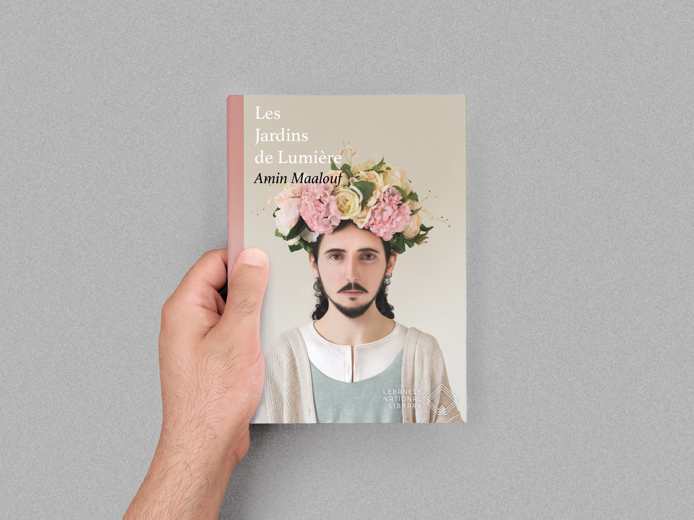
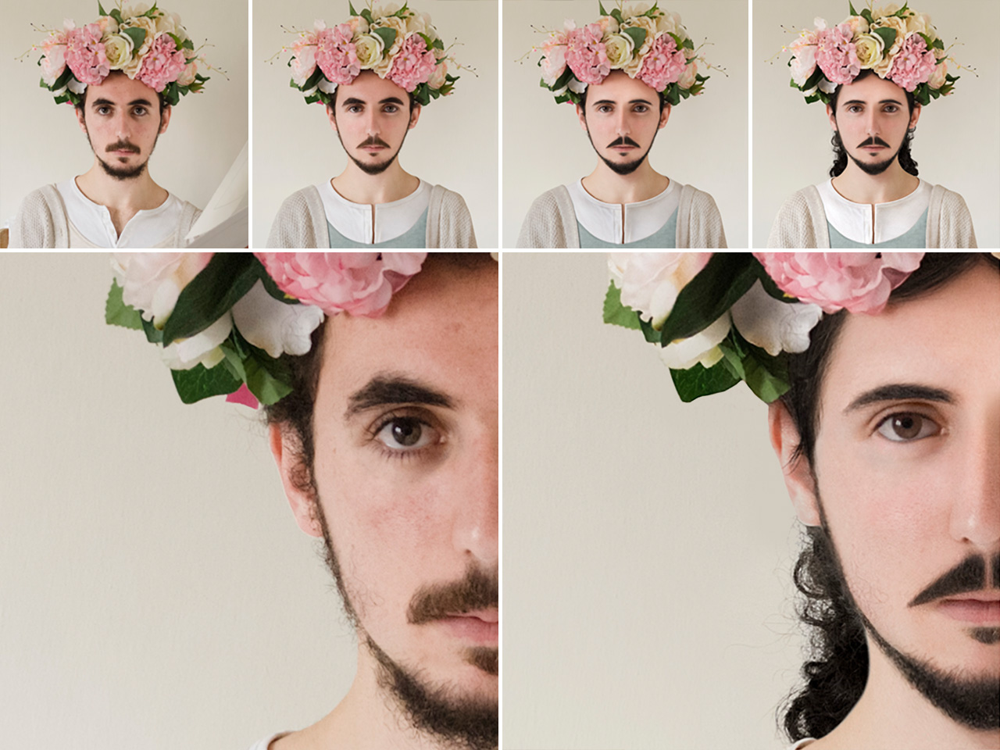

Inspirée du roman d'Amin Maalouf « Les jardins de lumière », ce projet est un portrait du caractère Mani, prophète né en Babylonie au 3e siècle.
Mani a été élevé dans une communauté ascétique, sous l’influence de la doctrine qui dit que le plaisir est égal au péché. En grandissant, il a cultivé ses talents de peintre, et à l'âge de douze ans, il a développé une puissante voix intérieure, qu'il a reconnu comme son jumeau, un jumeau qui lui livrait ses propres idées sur le divin.
À l'âge de vingt-quatre ans, il a été sommé par son jumeau de quitter la secte de son père pour diffuser le vrai message de Jésus. Ses enseignements étaient basés sur un dualisme stricte du bien et du mal, enfermé dans une lutte éternelle. Il croyait que le salut était possible par l'éducation, l'abnégation, le jeûne et la chasteté.
Vue du collage numérique.
Vue de la couverture de Les Jardins des Lumières.
Assemblage des plusieurs étapes de retouche d'images.